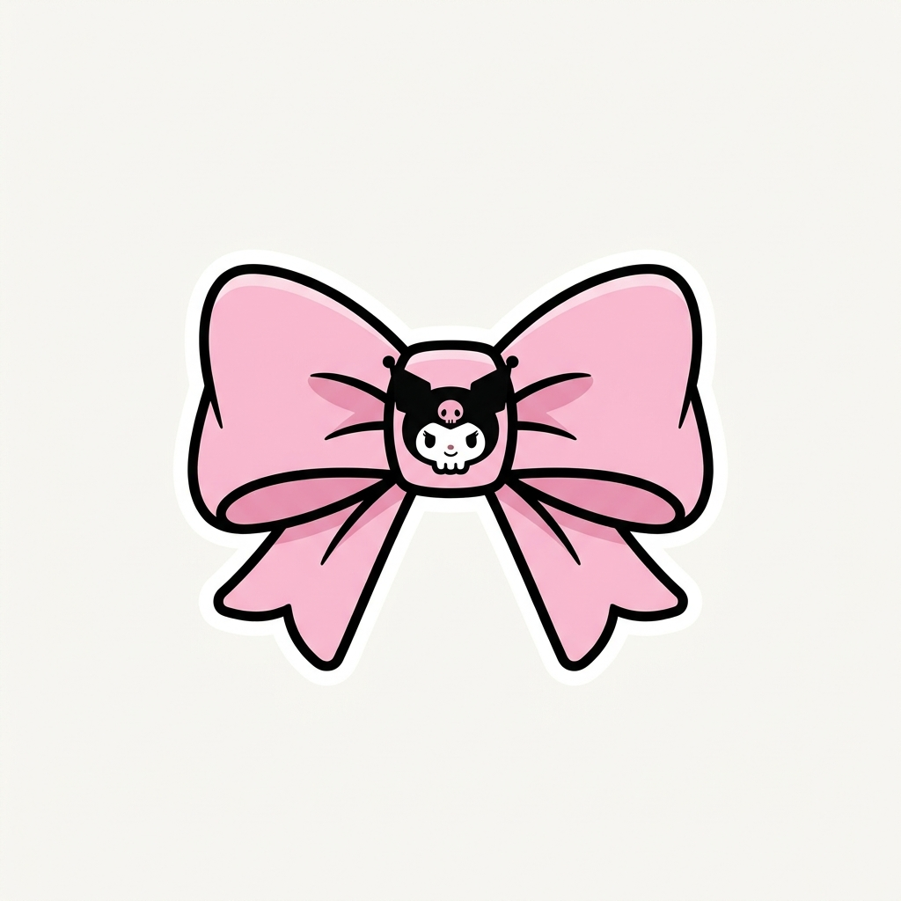

🖤 庫洛米 Kuromi 夢幻掃雷大作戰 💖
1. 目的：翻開所有不含地雷的粉色蝴蝶結方格！
2. 點擊翻開：點擊未翻開方格，翻開後呈現可愛的庫洛米頭像 🌸 與週邊地雷數量。
3. 標記地雷：使用滑鼠右鍵或手機長按，放置庫洛米骷顱頭 ☠️ 標記你懷疑是地雷的位置。
4. 20×20 特效版：經典 20×20 棋盤與 80 顆地雷，成功過關或踩爆時會有滿版夢幻酷炫特效！
💖 創作者：小小
太厲害了！你完美掃除了所有地雷！